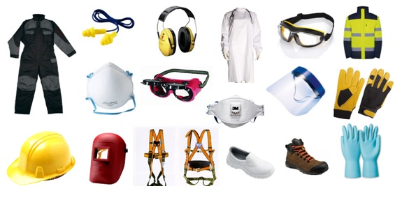

Segurança do trabalho é o conjunto de normas, atividades, medidas e ações preventivas praticadas para melhorar e garantir a segurança dos ambientes e campos de trabalho.
Qual é a Função da Segurança no Trabalho?
Minimizar os acidentes de trabalho, as doenças ocupacionais, bem como para proteger a integridade e a capacidade de trabalho do servidor.
Os objetivos são muitos, dentre eles destacamos: promover qualidade de vida, evitando acidentes e doenças ocupacionais, como lesões e dores no corpo ou limitações nas atividades cotidianas, temporária ou permanente.
Quais são?
Prezar pela saúde do colaborador;
Conscientizar sobre a importância da segurança;
Garantir o cumprimento da legislação;
E as principais normas que regulamentam a segurança do trabalho?
Riscos Ocupacionais;
Processos e equipamentos;
Materiais de trabalho;
Condições do espaço de trabalho;
Ambiente laboral;
Quais são as funções e responsabilidades de quem atua na segurança do trabalho?
Identificação de riscos: Avaliar e identificar os riscos presentes nos locais de trabalho, tanto físicos quanto químicos, biológicos, ergonômicos e de acidentes.
Implementação de medidas preventivas: Desenvolver e implementar medidas preventivas para reduzir ou eliminar os riscos identificados, incluindo a elaboração de procedimentos operacionais seguros.
reinamento e conscientização: Promover treinamentos regulares para os funcionários sobre segurança e saúde no trabalho;
Cumprimento da legislação: Assegurar que todas as normas regulamentadoras de segurança do trabalho sejam cumpridas conforme exigido pelas autoridades competentes.
Essas são apenas algumas das responsabilidades que os profissionais de segurança do trabalho desempenham para garantir um ambiente laboral seguro, saudável e em conformidade com as normas regulatórias.
O que são e para que servem as NRs?
Criadas em 1978, as NRs, como são conhecidas, padronizam métodos e regras para que tanto a empresa como os colaboradores tenham uma base para prevenir acidentes. Existem muitas NRs, mas iremos mostrar e resumir breviamente quatro delas:
Norma Regulamentadora NR-10. Segurança em Instalações e Serviços em Eletricidade, estabelece que somente profissionais autorizados podem realizar atividades em instalações elétrica
Norma Regulamentadora NR-11. É definida como Norma Especial, ou seja, é uma norma que regulamenta a execução do trabalho considerando a realização das atividades, sem estar condicionada a setores ou atividades econômicos específicos.
Norma Regulamentadora NR-13. Se trata da norma que determina os requisitos mínimos para a gestão da integridade estrutural de caldeiras a vapor, vasos de pressão e suas tubulações de interligação ligados à operação, inspeção, instalação e manutenção.
Norma Regulamentadora NR-33. É uma norma para trabalhos confinados, que estabelece medidas de prevenção, medidas administrativas, medidas pessoais, capacitação e medidas para situações de emergências.
Imagem de uma construção civil segura;Imagem de funcionários trabalhando em equipe;

Imagem de equipamentos de segurança;
Aqui, um vídeo de uma campanha australiana para conscientizar a importância da segurança no ambiente de trabalho.
"A segurança começa com você", foi desenvolvida em resposta a estatísticas alarmantes sobre acidentes e doenças no local de trabalho no pais. Produzida pela SafeWork NSW.